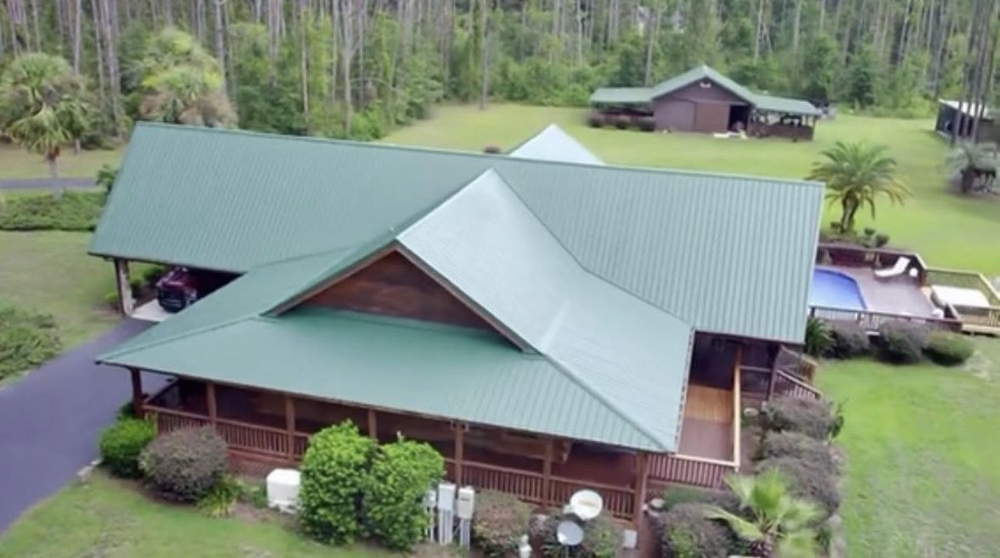
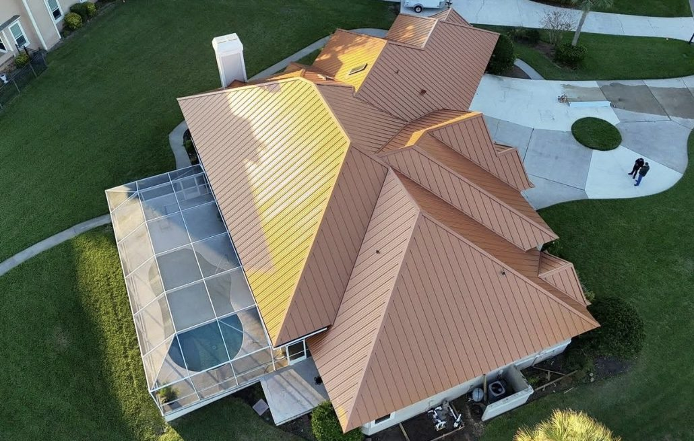

From in-town homes to pole barns off US-129, Mission Metals Manufacturing supplies the metal roofing and puts you in touch with licensed Live Oak-area installers who build with it.
Live Oak is the county seat of Suwannee County, set among farmland, pine stands and the springs country along the Suwannee River. Properties here range from older homes near downtown to farmhouses, manufactured homes, hay barns, equipment sheds and workshops on acreage. A roof in this part of Florida spends long summers under strong sun and heavy humidity, then takes pop-up thunderstorms most afternoons in the warm months.
That mix is why so many owners in the area pick metal roofing. One manufacturer can cover the house, the barn and the shop with matching color and trim. Mission Metals Manufacturing produces 5V crimp, PBR and standing seam metal roofing just down the road in Old Town, and our job is to connect you with an independent, licensed installer near Live Oak who uses our materials.
Referred installers are independent licensed Florida roofing contractors. They inspect, quote, contract and do the work directly with you.
Match the house, barn, carport and shop with the same metal roofing color and trim from a single North Florida manufacturer.
Our plant in Old Town is a short drive from Live Oak, so materials don't have to come from out of state.
Metal roofing sheds heavy downpours quickly, and a properly fastened system is engineered to resist wind uplift.
Light, reflective colors bounce back summer sun, which helps keep attics and barns cooler.
Weather: North Central Florida gets frequent summer lightning and heavy rain, and tropical systems sometimes reach the area as they move inland from the Gulf. Open rural sites can catch more wind than sheltered lots in town, so fastening and edge details matter.
Code: Reroofs must meet the Florida Building Code for wind loads. Your installer chooses the profile, fastener pattern and underlayment for your building and location.
Permits: Most reroofing jobs need a permit. Inside city limits that's usually through the City of Live Oak; in unincorporated areas it's through Suwannee County. Agricultural buildings can have different rules, so ask your installer to confirm requirements for your property before work starts.

House and outbuilding matched in green — a popular choice on Suwannee County acreage.

On-site roll-forming of standing seam panels to exact lengths for the installing contractor.

Copper-tone standing seam, installed by a licensed contractor with our panels.
Real Mission Metals photos. Mission Metals manufactures and supplies the metal roofing; roofs are installed by independent licensed contractors. Homes shown are in Florida and not necessarily in Live Oak.
No. Mission Metals Manufacturing makes the metal roofing, trim and accessories. We connect you with an independent, licensed installer serving Live Oak, and you contract with that installer directly.
Homes inside Live Oak city limits are permitted through the City of Live Oak, while most rural addresses fall under the Suwannee County Building Department. Your installer determines the right office and handles the permit.
Florida law treats some nonresidential farm buildings on agricultural land differently than homes, but the rules depend on how the property and building are used. Ask your installer or the Suwannee County Building Department before assuming a barn is exempt.
Yes. Many Suwannee County owners use 5V crimp or standing seam on the home and PBR on barns and sheds, all in matching colors from one manufacturer.
Live Oak is inland, but tropical systems moving up from the Big Bend still bring strong winds and heavy rain, and summer thunderstorms are frequent. A metal roofing system fastened to Florida Building Code requirements is engineered to resist wind uplift and shed downpours quickly.
Usually the opposite. Lighter, reflective colors return much of the sun's heat, and your installer can talk through ventilation and underlayment for older farmhouses.
Every installer we refer holds an active Florida roofing license, and you can look up any license at myfloridalicense.com.
Suwannee County and nearby, including Wellborn, McAlpin, Dowling Park, O'Brien and the Branford area along the Suwannee River.
How metal roofs handle Suwannee County wind, rain and lightning, and what to ask your installer.
Profile, gauge, tear-off, roof shape and access: the factors behind a local quote.
One call gets you connected with a licensed local installer who uses Mission Metals metal roofing.